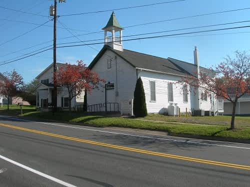

5488 Main Street
On April 1, 1891, Daniel Winesberry, a 72 years-old African American wagon maker, sold part of this lot to the trustees of the “colored Primitive Baptists” for one dollar. The portion sold was on the north corner of the lot, facing Main Street and was “129 feet by 38 feet deep”. According to the deed, Winesberry sold this portion of his lot to the trustees “for the purpose of Erecting a house of Worship for the above named Primitive Denomination of Baptists.” This information, in addition to the “1891” corner stone on the west-southwest side of the church, leads to the deduction that a church was built within a year after the land was purchased from Winesberry. This chapel was also used temporarily as the schoolhouse for local African American students when their Rosenwald school building was burned in 1939.